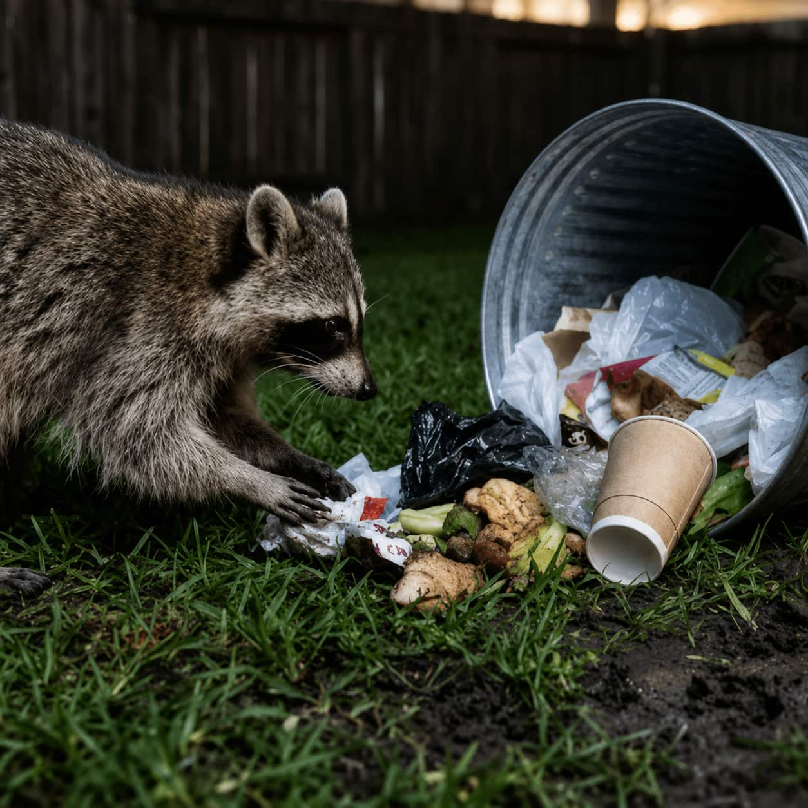

Compare common wildlife services
Explore service categories by animal type and home concern.
About WILDGUARD
WILDGUARD helps homeowners explore wildlife removal categories, compare local provider options, and understand exclusion-focused questions before choosing a company.
Our purpose
Wildlife problems can feel confusing because the right path may involve removal, inspection, exclusion, prevention, cleanup questions, or repair-related services. WILDGUARD organizes those options clearly.
Explore service categories by animal type and home concern.
Review provider topics connected to removal, sealing, and prevention.
Learn what to ask about vents, soffits, chimneys, and gaps.
Use the issue you are seeing to compare relevant local options.
Different by design
WILDGUARD is built around wildlife-specific comparison, not generic home service browsing.
Service categories are organized around common animal activity and home entry points.
Compare options connected to exclusion, prevention, and property protection questions.
Move from signs like noises or droppings to specific wildlife provider categories.
Review provider paths, inspection questions, and service topics in a simpler way.

Careful and protective
Wildlife removal decisions should be made carefully. WILDGUARD helps homeowners compare local provider options while thinking about humane handling, home protection, and prevention after activity is found.
Removal should be handled carefully.
Prevention matters after the issue is found.
Entry points should be reviewed.
Organized comparison
A simple structure helps homeowners move from uncertainty to clearer provider comparison.
Start with noises, odors, nesting, droppings, or visible animal activity.
Review removal, exclusion, and prevention-related service categories.
Look at local provider paths and ask the right inspection questions.
Homeowner feedback
Short, realistic feedback from homeowners using WILDGUARD to organize provider comparison.
“WILDGUARD made it easier to understand which type of wildlife service to compare.”
“I liked seeing removal and exclusion categories clearly separated.”
“The site helped me organize what to ask local providers.”
Explore options
Compare wildlife removal, exclusion, and property protection service categories before choosing a local provider.